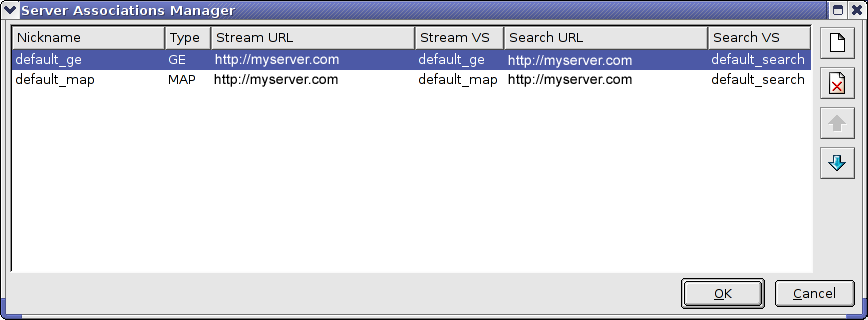

Before you use many of the Google Earth Enterprise Server configuration tools, you must stop the Google Earth Enterprise Server and then start it after you change the configuration. To stop/start the Google Earth Enterprise Server, enter:
/etc/init.d/geserver [stop | start | restart]In general, no additional configuration is required after you install the Google Earth Enterprise Server. However, there are a number of ways in which you can customize your Google Earth Enterprise Server configuration, if desired. This chapter provides information about those configuration options. (See the Command Reference chapter for a complete list of commands available to system administrators.)
The geserveradmin command handles many of the Google Earth Enterprise Server configuration changes you might want to make. All of the options and uses for geserveradmin are described in the geserveradmin section of the Command Reference doc.
Because Google Earth Enterprise Server is critical to many operations you perform with Google Earth Enterprise Fusion, verify that it is running.
http://www.example.com).
If Google Earth Enterprise Server is running, the browser displays the Google logo.
If Google Earth Enterprise Server is not running, the browser displays an error message informing you that the page cannot be found. On the command line, enter:
/etc/init.d/geserver start
If you again reach an error page, make sure that you have network access to the machine on which the server is installed and that the DNS entry for that machine is up-to-date.
Before publishing to virtual servers other than the default virtual servers, please familiarize yourself with the Apache Virtual Host documentation (http://httpd.apache.org/docs/2.2/vhosts/).
Caution: Publishing to virtual servers other than the default server is supported only in version 4.2 or later of Google Earth EC. If you are using version 4.0 or earlier, only databases that you publish to the default server can be accessed by Google Earth EC.
To define a virtual server, use the geserveradmin command (see geserveradmin for more details):
geserveradmin --addvs name --vstype type --vsurl url
Where:
ge (for 3D streaming) or map (for maps)/somename_ge; refer to geserveradmin in the Command Reference chapter for more information on the required format.After defining a virtual server, create a configuration file that specifies required information for that particular virtual server. To do so:
cd /opt/google/gehttpd/conf.d/examples/opt/google/gehttpd/conf.d/virtual_servers and rename it. For example:
cp /opt/google/share/gehttpd/examples/port_based_ge_vs_example.vhost
/opt/google/gehttpd/conf.d/virtual_servers/private_ge.vhostWhen choosing a configuration file to copy, use a file that:
_ge_ if you are creating a Google Earth Enterprise Fusion virtual server._map_ if you are creating a Google Maps virtual server.location_based if you are creating a location-based virtual server.name_based if you are creating a name/domain-based virtual server.port_based if you are creating a port-based virtual server.You must maintain the .location or .vhost extension on the file name.
In a location-based configuration file:
<LOCATION> to the vsurl value specified in the geserveradmin command you used to register the virtual server.
Note: For a Google Maps virtual server, you must make this change in five places.
<VS_NAME> to the addvs name specified in the geserveradmin command you used to register the virtual server.In a name-based configuration file:
<HOST.DOMAIN> to the desired server name.<VS_NAME> to the addvs name specified in the geserveradmin command you used to register the virtual server.In a port-based configuration file:
<IP_ADDRESS> to the IP address of the host.<PORT> to the number of the port you want to use.<VS_NAME> to the addvs name specified in the geserveradmin command you used to register the virtual server.Note: You can optionally create combinations of name-based or port-based and location-based virtual servers. If you do, you must create an Apache configuration file with the .vhost extension that references multiple virtual servers. Make sure you create the corresponding virtual servers using the geserveradmin --addvs command. (See geserveradmin for more information.)
Next, you must configure a server association for the new virtual server.
The Google Earth Enterprise Server consists of a stream server and a search server. You can publish a Google Earth Enterprise Fusion database to stream and search virtual servers running on your local workstation or on a remote server. Associated stream and search virtual servers can be located on different physical servers or on the same server.
The Server Associations Manager allows you to specify server associations in preparation for publishing your databases. You can specify any number of additional server associations in the Server Associations Manager. Then you can select the desired server association in the Publish Database dialog. (Refer to Publishing a Database in the Google Earth Enterprise Fusion Reference Guide for more information.)
Caution: If you're working with multiple Google Earth Enterprise Fusion users on multiple workstations, it is important to remember that all managers on the Tools menu can be accessed by all users at the same time. If multiple users are working with the same manager at the same time, when one user closes the manager, that user’s changes overwrite all previous data for that manager. So if you are working in a multi-user environment, be sure to coordinate with the other users to be sure that only one user has this manager open at a time.
The Server Associations Manager window appears with two default server associations listed--one for publishing to Google Earth and the other for publishing to Google Maps. The default server associations assume that you have Google Earth Enterprise Server installed on the same workstation as Google Earth Enterprise Fusion.
http://www.example.com:9090). 
Repeat the steps above for each server association you want to add. The server associations appear on this list in the order in which you added them. They also appear on the Server Associations drop-down list in the Publish Database dialog in the same order. The first server association listed here is the default in the Publish Database dialog.
If you want to reorder the server associations on the list (particularly if you publish to a certain server most of the time and want it to be the default in the Publish Database dialog), select the server association that you want to move, and click the up or down arrows to change that server association's position in the list.
You can configure your Google Earth Enterprise Server to use HTTPS connections by editing the virtual server’s configuration file. Each time you restart Google Earth Enterprise Server, publish a database ,or start Apache, Apache reads this file.
gehttpd.conf) for the virtual server you want to make secure.
The configuration file is stored in /opt/google/gehttpd/conf.d/virtual servers. (See Configuring Virtual Servers for details.) The contents of the configuration file look like:
<LocationMatch "/private_ge/*">
Include conf.d/virtual_servers/runtime/private_ge_runtime
</LocationMatch>LocationMatch directive exactly as they appear here:<LocationMatch "/private_ge/*">
Include conf.d/virtual_servers/runtime/private_ge_runtime
SSLRequireSSL
SSLVerifyClient none
</LocationMatch>This procedure gets you to a point where you have “bare bones” security on your server. It requires that users use the HTTPS protocol instead of HTTP when they specify a location. However, if you want to add more security, you can do so by following the instructions provided in the Apache 2.2 documentation at http://httpd.apache.org.
When you install the Google Earth Enterprise Server, you specify a location for your publish root, the directory in which all of your published databases are stored.
/etc/init.d/geserver stopgeconfigurepublishroot When prompted, enter the path where you want to create the publish root. For example, if you have designated a separate volume for publishing called /gepub, enter /gepub/published_dbs.
/etc/init.d/geserver startWhen you create a new publish root, it is automatically selected. The next time you publish a database, Google Earth Enterprise Fusion stores it in the selected publish root.
If you have multiple publish roots, you can go back and forth among them, using different publish roots for different purposes.
Note: If you have multiple publish roots, be sure to select the corresponding asset root for the intended publish root before you publish. Otherwise, it could end up with an incompletely published database. (See geselectpublishroot in the Command Reference chapter for more information.)
/etc/init.d/geserver stopgeselectpublishroot pathwhere path is the full path to the publish root, such as /gepub/published_dbs.
/etc/init.d/geserver startAuthentication is the process of verifying the identity of a user, a system, or a process. Controlled access refers to any content or process that requires authentication. The following sections describe how to configure:
By default, Google Earth Enterprise Server does not require authentication for publishing. However, you can configure your server to control access for publishing using standard Apache authentication methods. This section is primarily for system administrators who are unfamiliar with configuring Apache authentication.
First, decide which authentication method you want to use.
mod_auth_digest Apache module)
mod_auth_basic Apache module)
Both methods are essentially the same, except that mod_auth_digest encrypts the users’ password, and mod_auth_basic does not. However, mod_auth_digest is not supported by all browsers. See http://httpd.apache.org/docs/2.2/mod/mod_auth_digest.html and http://httpd.apache.org/docs/2.2/mod/mod_auth_basic.html for complete details on these two authentication methods.
Google strongly encourages you to use HTTP Digest authentication (mod_auth_digest) instead of HTTP Basic authentication. The following procedure describes configuring publishing authentication using HTTP Digest.
/opt/google/gehttpd/bin/htdigest -c path_to_pwd_file Publisher user_nameThe first part is the path to the Apache utility you use to create the password file, htdigest. The -c option indicates that you are creating a new file. The path_to_pwd_file is the location where you want to store the password file and the name of that file; it can be any name and location you choose. Publisher is the realm, and you must enter it exactly as it appears above. The user_name is the first user name you want to add to the password file.
When you press Enter, the utility prompts you to enter a password for the specified user.
The htdigest utility creates the password file, which contains only that one user name, the realm, and the encrypted password. For example, if you view the contents of the password file, it might look like this:
jsmith:Publisher:f9d3c803aeb515f35568b37ec2d65399/opt/google/gehttpd/bin/htdigest path_to_pwd_file Publisher user_nameUse the same path_to_pwd_file as you used for the first user. Do not include the -c option, since you are not creating a new file this time.
publisher_digest_auth.conf file from /opt/google/gehttpd/conf.d/examples to /opt/google/gehttpd/conf.d.
/opt/google/gehttpd/conf.d/publisher_digest_auth.conf) in an editor and:
<Location> directive(s) for stream publisher and/or search publisher by removing the # at the beginning of each line. (If you want to configure authentication for one type of server only, uncomment only its directive. If you want to configure both the search server and the stream server, uncomment both directives.)
<<PATH_TO_USER_FILE>> to the password file path (the value of path_to_pwd_file in step 1).
publisher_digest_auth.conf file.
/etc/init.d/geserver restartWhen a server is configured for publishing authentication, Google Earth Enterprise Fusion users who try to publish to that server must enter their user name and password. Refer to Publishing a Database in the Google Earth Enterprise Fusion Reference Guide for more information.
Configuring client authentication is very similar to configuring publishing authentication, except that client authentication is specific to each virtual server, whereas publishing authentication is not.
/opt/google/gehttpd/bin/htdigest -c path_to_pwd_file Client user_nameThe first part is the path to the Apache utility you use to create the password file, htdigest. The -c option indicates that you are creating a new file. The path_to_pwd_file is the location where you want to store the password file and the name of that file; it can be any name and location you choose. Client is the realm. You can use any realm you want; however, you must use the same realm in step 4. The user_name is the first user name you want to add to the password file.
Note: Set the umask to 0022 before
using htdigest to create the htdigest_password_file or change permissions
to rw-r--r-- (644) after the htdigest_password_file is
created. Check the permissions for the htdigest_password_file and
if the permissions are set to rw-r-----, change the group ownership to
gegroup.
Press Enter. The utility prompts you to enter a password for the specified user. Enter the password, and retype it when prompted.
The htdigest utility creates the password file, which contains only that one user name, the realm, and the encrypted password. For example, if you view the contents of the password file, it might look like this:
jsmith:Client:f9d3c803aeb515f35568b37ec2d65399/opt/google/gehttpd/bin/htdigest path_to_pwd_file Client user_nameUse the same path_to_pwd_file as you used for the first user. Do not include the -c option, since you are not creating a new file this time.
/opt/google/gehttpd/conf.d/virtual_servers/config_file file (where config_file is the configuration file for the virtual server you want to protect) in an editor, and add the following lines at the beginning of the <Location> directive:AuthType Digest
AuthName "Client"
AuthDigestProvider file
AuthUserFile path_to_pwd_file
Require valid-userWhere Client is the exact name of the realm and path_to_pwd_file is the same path you used in the htdigest command in step 1.
If this is a _ge_ virtual server, add:
BrowserMatch "GoogleEarth" AuthDigestEnableQueryStringHack=OnIf this is a _map_ virtual server, add:
BrowserMatch "MSIE" AuthDigestEnableQueryStringHack=OnFor more information about AuthDigestEnableQueryStringHack, refer to the Apache documentation at http://httpd.apache.org/docs/2.2/mod/mod_auth_digest.html#msie.
The final <Location> directive looks like:
<LocationMatch /default_ge/*>
AuthType Digest
AuthName "Client"
AuthDigestProvider file
AuthUserFile path_to_pwd_file
Require valid-user
Include conf.d/virtual_servers/runtime/default_ge_runtime
BrowserMatch "GoogleEarth" AuthDigestEnableQueryStringHack=On
</LocationMatch>/etc/init.d/geserver restart
If you use LDAP for user authentication on your network, you can configure LDAP authentication for publishing with Google Earth Enterprise Fusion. Since Basic authentication is used for password challenge, Google suggests that you publish through an SSH tunnel. (See Configuring Secure Remote Publishing (Using an SSH Tunnel) for more information about configuring an SSH tunnel.)
publisher_ldap_auth.conf file from /opt/google/gehttpd/conf.d/examples to /opt/google/gehttpd/conf.d.
/opt/google/gehttpd/conf.d/publisher_ldap_auth.conf in an editor.
<Location /StreamPublisher/>
AuthType Basic
AuthName "Publisher"
AuthBasicProvider ldap
AuthzLDAPAuthoritative off
AuthLDAPURL "<<LDAP_SERVER_URL_and_LDAP_SEARCH_PARAMETERS>>"
Require valid-user
</Location><<LDAP_SERVER_URL_and_LDAP_SEARCH_PARAMETERS>> to the actual path to your LDAP server and any parameters you want to set, for example:ldap://ent-test-ldap.mycompany.com/dc=mycompany,dc=com?uid?sub?(objectClass=*)<Location /SearchPublisher/>
AuthType Basic
AuthName "Publisher"
AuthBasicProvider ldap
AuthzLDAPAuthoritative off
AuthLDAPURL "<<LDAP_SERVER_URL_and_LDAP_SEARCH_PARAMETERS>>"
Require valid-user
</Location><<LDAP_SERVER_URL_and_LDAP_SEARCH_PARAMETERS>> to the actual path to your LDAP server and any parameters you want to set.
If you use LDAP for user authentication on your network, you can configure LDAP authentication for any virtual servers you configure. As with LDAP authentication for publishing, since the AuthDigestProvider directive does not support LDAP and AuthBasicProvider does not encrypt passwords, please contact Google technical support for help configuring secure LDAP authentication for virtual servers.
If you publish a database that you want to keep private and allow access only to certain users, configuring client authentication provides that security with regard to the stream server. However, if you host a searchable private database on the same server with a publicly accessible database, users who are able to log in to the public database can, theoretically, search the private database on that server. Such a user would need to be very knowledgeable about Google Earth Enterprise Fusion and would need to know the exact URL of the private database, so the likelihood of this breach is small; however, it is possible.
Therefore, to ensure that a database is completely secure (that is, no unauthorized users can view or search the data), you must publish that database on a separate search server host that requires authentication and allows access to only approved users.
Note: If you are short of server space, you can publish the private database to a shared stream server (that is, a mix of databases that do and do not require authentication) and just publish the private database to a search server on a separate (authentication only) host.
When Google Earth Enterprise Fusion publishes a database, it does not encrypt the data. If you want to encrypt the data during the publishing process to a remote server (or even on separate remote stream and search servers), you can use an SSH tunnel.
ssh -L port_num:host_name:80 host_nameFor example:
ssh -L 8010:remoteServer:80 remoteServerNote: You can use any port that is available, but Google recommends a high number.
ssh command, for example:
Note: If the remote server requires authentication, it prompts you to log in when you click Query.
exit in the terminal window.
The next time you want to publish securely to that same remote server, you can skip step 2.
ssh -L port_num:host_name:80 host_nameFor example:
ssh -L 8010:remoteServer:80 remoteServerNote: You can use any port that is available, but Google recommends a high number.
ssh -L 8020:remoteServer:80 remoteServerexit in the terminal windows.
The next time you want to publish securely to that same remote server association, you can skip step 3.
If you want to publish databases on a server that does not have a network connection to your Google Earth Enterprise Fusion workstations, you can configure a server with the disconnected server add-on.
New in Google Earth Enterprise 4.0 is the ability to combine disconnected publishing and connected publishing together. Prior to 4.0, only one type was supported for a database. With this change, for example, a large database can be copied to portable media and loaded onto the server using disconnected publish, saving the time and bandwidth required to send terabytes of data over the network. Later, deltas for the same databases can be sent over the wire.
Note: Disconnected production servers require X11 libraries, including Mesa. Google Earth Enterprise Server does not require an X server to be running or installed, however. Only the libraries are required.
To create the disconnected database, use gedisconnectedsend from the command line. In the example below, the --report_size_only flag is turned on; the size of the database should be compared to the free space on your removeable media.
gedisconnectedsend --report_size_only --sendpath \ /gevol/assets/Databases/igain.kdatabase/gedb.kda/ver001/gedb rm -rf /portable_media/new_dir mkdir -p /portable_media/new_dir gedisconnectedsend --output /portable_media/new_dir \ --sendpath /gevol/assets/Databases/igain.kdatabase/gedb.kda/ver001/gedb
Use --havepath or --havepathfile to create a delta database.
When publishing from machine_one to machine_two, for example:
On machine_two:
geserveradmin --fusion_host machine_one --listdbs > /portable_media/dblist
On machine_one:
gedisconnectedsend --output /portable_media/new_dir \ --havepathfile /portable_media/dblist \ --sendpath /gevol/assets/Databases/igain.kdatabase/gedb.kda/ver001/gedb
Connect the portable media to the Server host and mount the drive. Then:
geserveradmin -stream_server_url http://your_stream_server \ --search_server_url http://your_search_server \ --adddb \ /portable_media/new_dir/gevol/assets/Databases/igain.kdatabase/gedb.kda/ver001/gedb
geserveradmin --stream_server_url http://your_stream_server \ --search_server_url http://your_search_server \ --pushdb \ /portable_media/new_dir/gevol/assets/Databases/igain.kdatabase/gedb.kda/ver001/gedb
geserveradmin --stream_server_url http://your_stream_server \ --search_server_url http://your_search_server \ --publishdb \ /portable_media/new_dir/gevol/assets/Databases/igain.kdatabase/gedb.kda/ver001/gedb
geserveradmin --stream_server_url http://your_stream_server \ --search_server_url http://your_search_server \ --listdbs geserveradmin --stream_server_url http://your_stream_server \ --search_server_url http://your_search_server \ --dbdetails \ /portable_media/new_dir/gevol/assets/Databases/igain.kdatabase/gedb.kda/ver001/gedb
ssh your_server /opt/google/bin/geindexcheck --database \ /gevol/published_dbs/stream_space/your_server/gevol/assets/ Databases/igain.kdatabase/gedb.kda/ver001/gedb ssh your_server /opt/google/bin/geindexcheck --mode all --database \ /gevol/published_dbs/stream_space/your_server/gevol/assets/ Databases/igain.kdatabase/gedb.kda/ver001/gedb
Note: The paths in the examples above were split onto two lines for documentation. They should be entered on one line when completing your commands.
The steps to delete DBs at end of life, for disconnected servers, is same as what was described in over the wire publishing section.